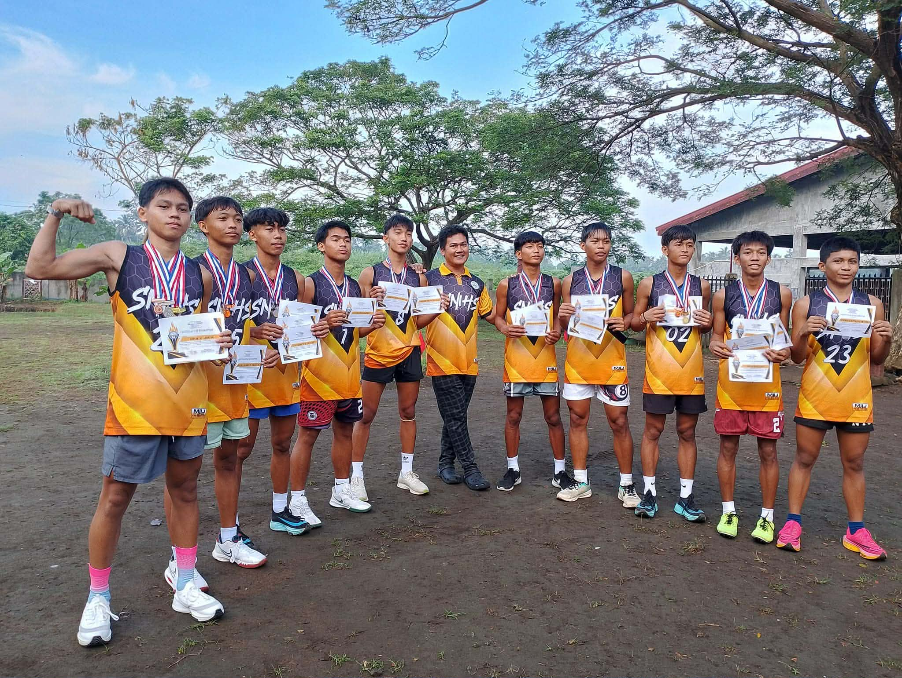
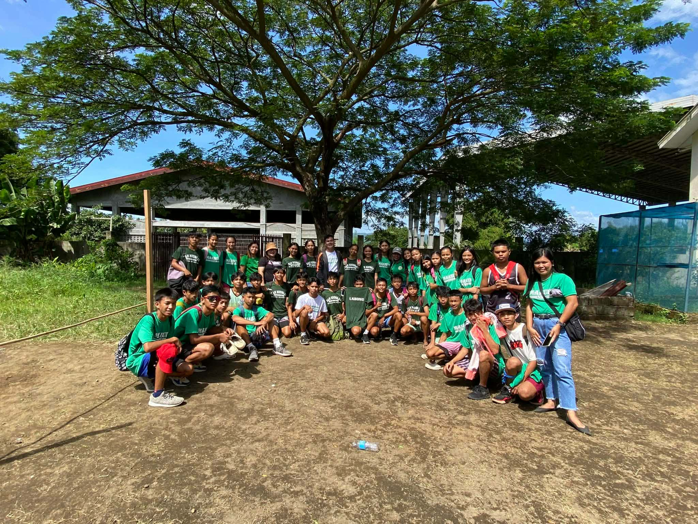
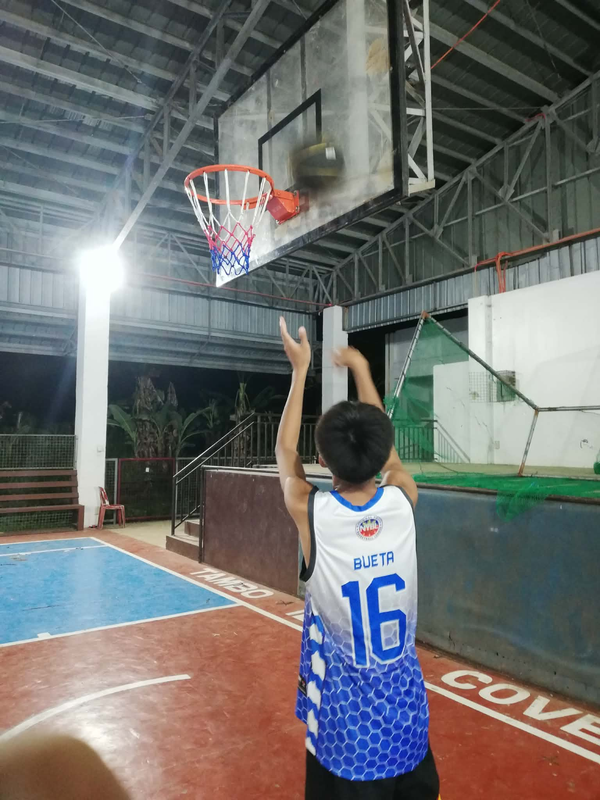
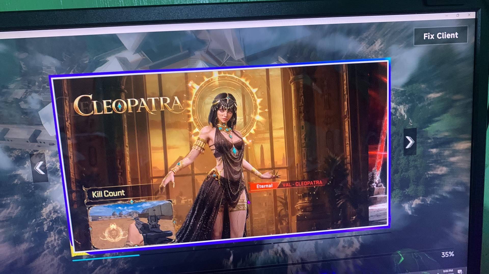
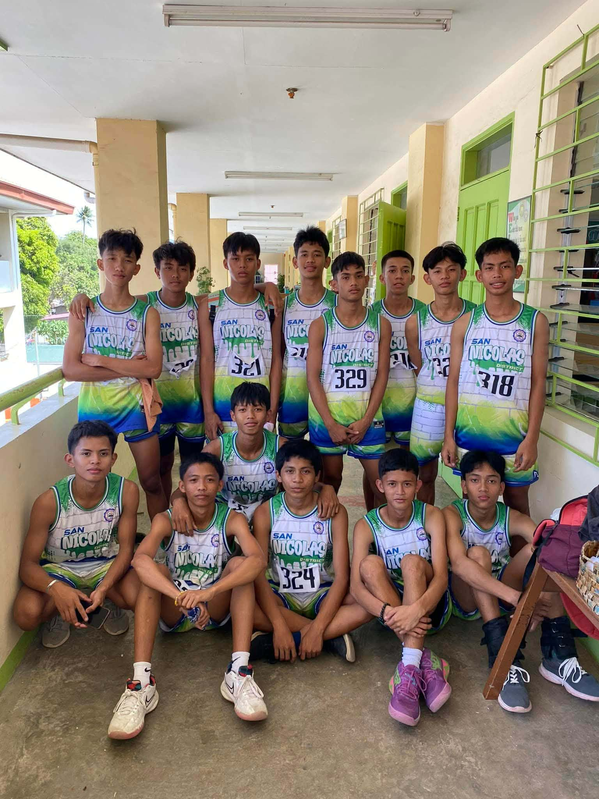

A VISUAL SCRAPBOOK
Frames of
everyday life.
A few scenes inspired by the hobbies, sports, and moments I enjoy.

Athletics

My Team

Basketball

Blood strike

Stay active
A collection of visual references for the things that keep me inspired.